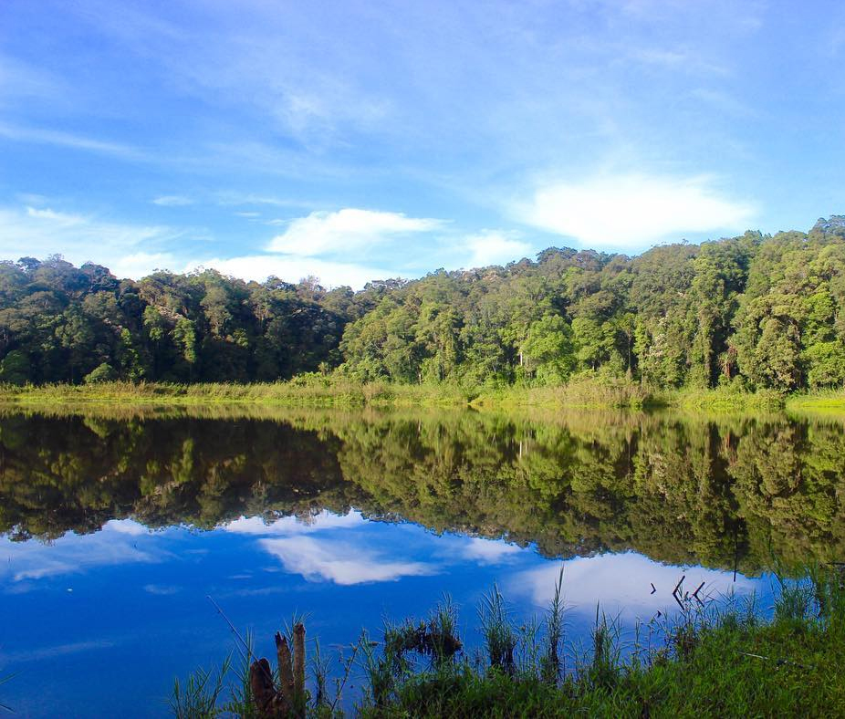

Destinasi lainnya
Danau Tambing
Danau Tambing (atau Rano Kalimpa’a) adalah danau alami yang terletak di kawasan Taman Nasional Lore Lindu, Kabupaten Poso, Sulawesi Tengah. Berada di ketinggian sekitar 1.700 mdpl, danau ini menyajikan udara pegunungan yang sejuk, pemandangan hutan yang masih perawan, dan sebuah danau bercermin yang menenangkan.
 Akses & Lokasi
Akses & Lokasi
- Berjarak sekitar 90 km dari Kota Palu dengan waktu tempuh 2–3 jam melalui jalur Trans Palu–Napu. Jalan sudah baik, bisa dijangkau dengan mobil maupun motor
- Menampung sekitar 260–270 jenis burung, dimana sekitar 30 % merupakan endemik seperti burung kipasan Sulawesi dan kancilan ungu. Juga menjadi habitat berbagai flora endemik seperti anggrek dan kantung semar
 Fasilitas & Aktivitas Pengunjung
Fasilitas & Aktivitas Pengunjung
- Terdapat camping ground, mushola, toilet, perahu ketinting, serta fasilitas memancing dan tracking. Pengunjung sering melakukan camping, bird watching, fishing, relaksasi di hammock, atau outbound edukatif

Iklim Pegunungan & Keramaian
- Suhu rata-rata saat malam dan pagi berkisar antara 10–15 °C. Banyak dikunjungi saat akhir pekan dan libur, dengan kunjungan bisa mencapai ratusan hingga ribuan orang per hari. Memungkinkan untuk menikmati pemandangan kabut pagi dan langit bertabur bintang di malam hari